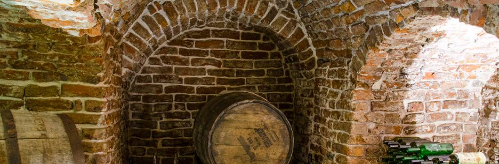

Powrót do strony głównej

Przemyskie podziemia Interesujące, dwukondygnacyjne podziemia budynku o powierzchni blisko 400 m kw.
sięgają do poziomu około 10 metrów poniżej poziomu terenu.
Dawni właściciele, w tym także kupcy, przechowywali w piwnicach o zróżnicowanej wielkości i różnych poziomach głębokości swoje dobra i towary.
Wśród nich można wymienić: wina, miody pitne i lokalne bogactwo Ziemi Przemyskiej, czyli cenną w całej Europie sól.
Przechowywano tam również m.in.: solone mięso, wędliny, słoninę, ziemiopłody i nabiał.
Kupcy prowadzili tam także bezpośredni handel z przybyłymi do Przemyśla kontrahentami oraz z mieszkańcami miasta i okolic.
Podziemia służyły nie tylko jako magazyny towarów i miejsce handlu, ale także jako szynki i warsztaty rzemieślnicze, a nawet w razie potrzeby wykorzystywano je na czasowe mieszkania dla służby.
W ostatnich latach dużym nakładem sił i środków przywrócono podziemiom pierwotny wygląd.
W 2014 roku oddano do użytku zrewaloryzowany 100-metrowy odcinek XVII-wiecznego kolektora biegnącego pod ulicą Mostową oraz północną częścią Rynku z wyjściem na wysokości budynku Rynek 5.
Przemyskie podziemia to część pierwotnej zabudowy miasta z czasów średniowiecza.
Obecnie udostępnione do zwiedzania są dwukondygnacyjne piwnice znajdujące się pod budynkiem Urzędu Miasta wraz z nowo oddanym odcinkiem siedemnastowiecznego kolektora.
W planach jest jeszcze połączenie kolektora z wielokondygnacyjnymi piwnicami sąsiednich kamienic i utworzenie sieci podziemnych korytarzy.
Recenzja miejsca